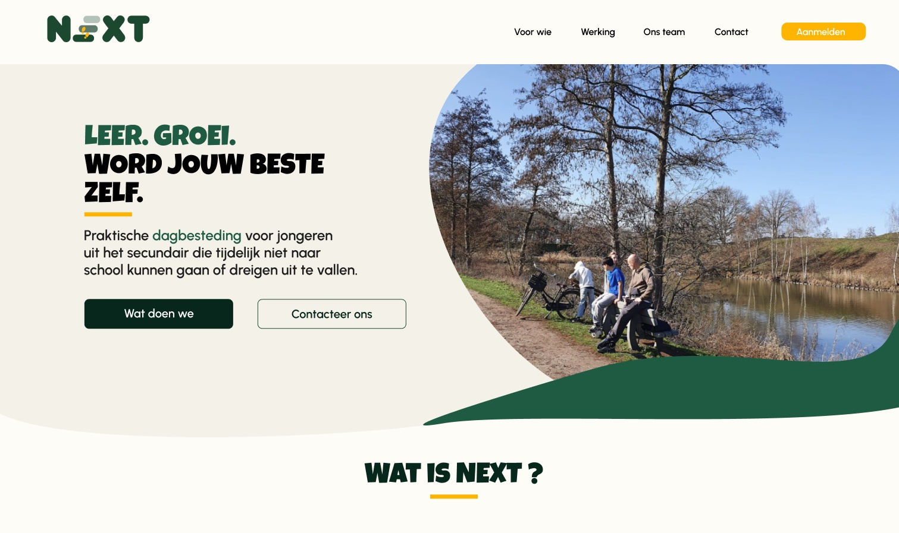
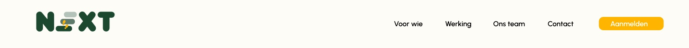
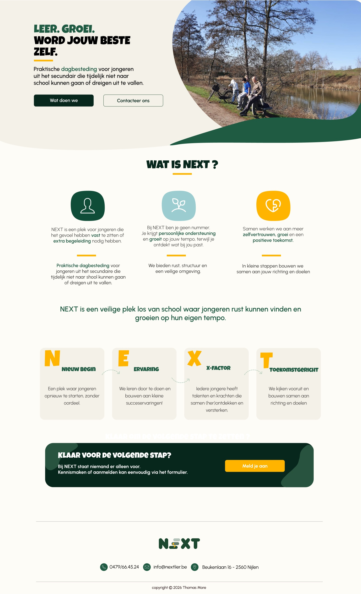
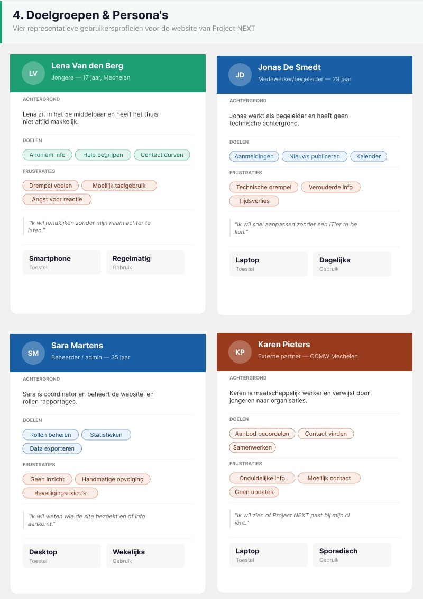
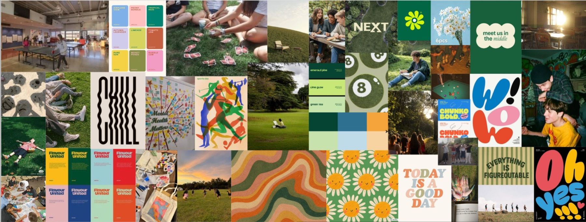
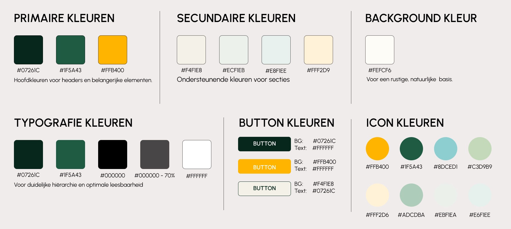
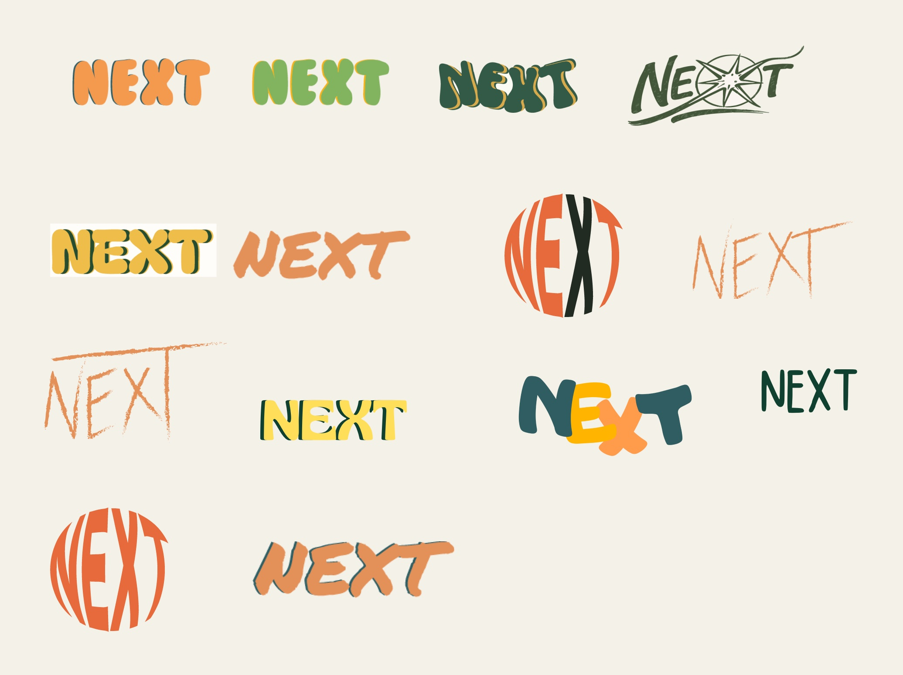
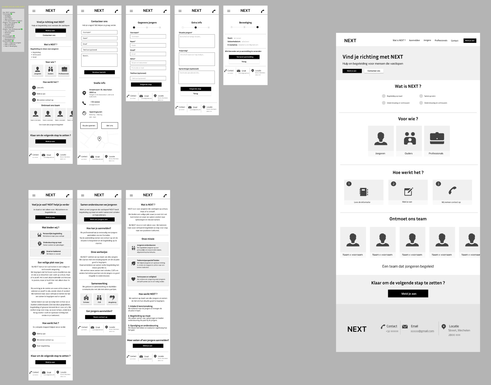
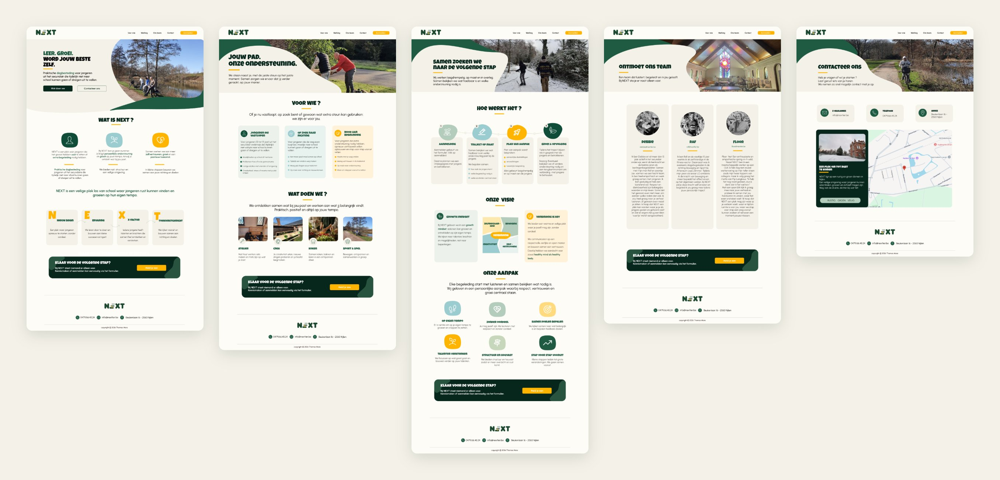

Project NEXT
Projectdetail
Project NEXT
Een schoolopdracht in groep waarin we een nieuwe website ontwierpen voor NEXT, een organisatie in Nijlen die jongeren uit het secundair begeleidt die tijdelijk niet naar school kunnen gaan of dreigen uit te vallen.
Groepswerk voor school, ontworpen voor de organisatie NEXT.

Projectintro
Overzicht
Prototype
Klik zelf door het ontwerp.
Een klikbare desktopversie van het eindontwerp. Gebruik het menu bovenaan of de knoppen om naar een andere pagina te gaan, en scroll om de hele pagina te zien.


Onderzoek
Voor wie ontwerpen we?
We begonnen met een doelgroepanalyse. Vier persona's stonden voor de mensen die de website gebruiken: Lena, een jongere van 17 die anoniem wil rondkijken; Jonas, een begeleider zonder technische achtergrond; Sara, de coördinator die de site beheert; en Karen, een maatschappelijk werker die jongeren doorverwijst. Voor elke groep schreven we user stories volgens 'Als … wil ik … zodat …'.

Onze vier persona's, met hun doelen, frustraties en het toestel dat ze gebruiken.
Wat we leerden
Jongeren zoeken hulp voorzichtig en het liefst anoniem. Een te formele website schrikt hen af. Daarom kozen we voor eenvoudige taal en geen verplichte registratie.
De medewerkers moeten de inhoud zelf kunnen bijwerken, zonder technische kennis. We vergeleken daarom verschillende CMS'en, van WordPress tot Webflow.
De beheerder wil weten of de informatie aankomt. Een dashboard met basisstatistieken over bezoekers en formulieren helpt daarbij.
Partners hebben weinig tijd en willen meteen zien of een samenwerking mogelijk is. De contactgegevens moeten dus duidelijk zichtbaar zijn.
Branding
Natuurlijk, verbonden en hoopvol.
Het moodboard zette de toon: een veilige, rustige plek om te groeien, met veel groen en buitenbeelden. Speelse en creatieve elementen geven een gevoel van vrijheid en samen zijn. Niet corporate of streng, maar warm, menselijk en toegankelijk. Daaruit kwam het kleurenpalet: donkergroen en bosgroen als hoofdkleuren, warm geel voor de knoppen en accenten, en zachte crèmetinten als achtergrond.

Ons moodboard: natuur, verbinding en speelse, creatieve beelden.

Het kleurenpalet met de kleuren voor tekst, knoppen, secties en iconen.
Logo
Zoeken naar het juiste logo.
We schetsten veel logo-ideeën, van handgetekende letters tot ronde en speelse vormen. Na feedback werkten we verschillende varianten verder uit in de kleuren van het palet. Het uiteindelijke logo is stevig en vriendelijk, met een E die uit lagen bestaat.

Logovarianten die we na de eerste feedback uitwerkten.
Wireframes
Eerst de structuur.
In de lo-fi wireframes werkten we eerst de structuur uit, mobiel en op desktop: de homepage, een pagina voor jongeren en een voor professionals, het team, veelgestelde vragen, contact en een aanmelding in drie stappen. De feedback was dat het ontwerp te 'veilig' aanvoelde: de blokken maakten het corporate en het leek meer op een app dan op een website.

De eerste lo-fi versie, mobiel en op desktop.
Hi-fi ontwerp
Warm, menselijk en open.
Met die feedback maakten we het ontwerp losser: organische vormen, echte foto's van het domein en van de activiteiten, en de warme kleuren van het palet. De website heeft vijf pagina's: Home, Voor wie, Werking, Ons team en Contact. Op de homepage staat de naam NEXT voor Nieuw begin, Ervaring, X-factor en Toekomstgericht. Elke pagina eindigt met dezelfde uitnodiging: 'Klaar voor de volgende stap?'.

De vijf pagina's van het eindontwerp: Home, Voor wie, Werking, Ons team en Contact.